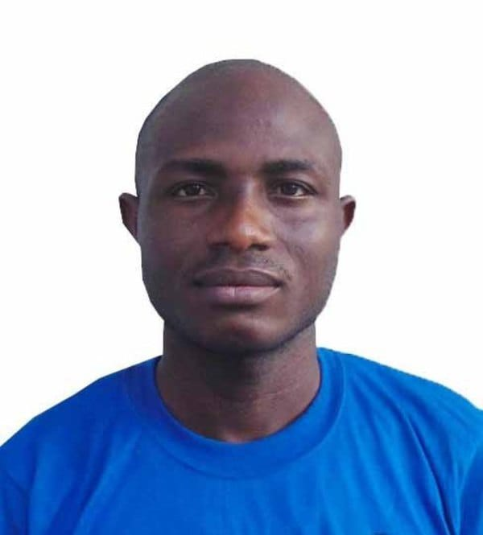

Home
About Me
I’m Abiodun Temitope Babayode, a passionate Software Engineer with strong experience in backend and full-stack development. I enjoy designing secure, scalable, and efficient systems that solve real-world problems. Currently, I work as a Backend Developer at Norlics Technology, where I help build and maintain a revenue and tax management platform for the Enugu State Government using Node.js, Express, MySQL, and Sequelize.
My previous experience includes roles at Enexgi Technology, Eagle3D Streaming, and Techconnfer Technology, where I contributed to fintech, streaming, and enterprise applications. I hold an HND in Food Technology (Distinction) from Federal Polytechnic Offa, a BSc in Computer Science from Sainte Felicite University, Benin, and I’m currently pursuing a degree in Software Development through BYU–Idaho’s PathwayConnect. I’m also the creator of Servver, a service-booking mobile app that connects Nigerians with trusted service professionals, featuring scheduling, secure payments, and real-time ratings. I’m always open to connecting with professionals passionate about technology, innovation, and impactful solutions.
Student Photo
